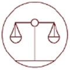

Lesson information
| Teacher | Nilasha Sempon | Grade | Grade 8 Advanced · Science |
|---|---|---|---|
| Unit | Unit 2: Understanding Waves · Module 2: Light (U2M2L1 · How Light Travels) | Week / lesson | Week 9 · Period 1 |
| Duration | 45 minutes | Slides | 30 interactive slides (PowerPoint: 31, with an animated “How does it happen?” slide) |
Success criteria
- I can explain that light is an electromagnetic wave that I can see.
- I can name the seven types of electromagnetic waves in order.
- I can give one use of each type of electromagnetic wave.
- I can state that light wavelengths are about 400–700 nanometres.
- I can explain that the energy of an electromagnetic wave depends on its frequency.
Key vocabulary
- Light: Electromagnetic radiation that you can see.
- Electromagnetic wave: A wave made by vibrating particles. It spreads out electric and magnetic fields in all directions.
- Radiant energy: The energy carried by an electromagnetic wave.
- Electromagnetic spectrum: All the electromagnetic waves, sorted by wavelength and frequency.
- Wavelength: The distance from one crest of a wave to the next crest.
- Frequency: The number of waves that pass a point each second, in hertz (Hz).
- Nanometre (nm): One-billionth of a metre. Light wavelengths are measured in nm.
- Visible light: The only part of the spectrum our eyes can see: about 700 nm to 400 nm.
UAE National Charter
Skills developed in this lesson:
 Teamwork
Teamwork Reading and Writing
Reading and Writing Critical Thinking
Critical Thinking
Integrity Effective Communication
Effective Communication Self-Regulation and DisciplineInitiative and Perseverance
Self-Regulation and DisciplineInitiative and Perseverance Respect and Kindness
Respect and Kindness Numeracy
Numeracy
National Identity and values links:
 National Identity
National Identity Lifelong Learning
Lifelong Learning Cooperation
Cooperation Innovation
Innovation Excellence
ExcellenceValues Team coaches: Shahin (Leadership), Fahim (Knowledge), Maha (Respect), Ahmed (Responsibility), Hessa (Tolerance).
Resources
- Interactive web lesson (this website) on the classroom screen; student devices for the LMS
- Textbook: Module Light, Lesson 1 How Light Travels (What is light?, the electromagnetic spectrum, Across the Wavelengths, Properties of Light, Energy)
- Rainbow lab: a clear glass of water · white paper · a torch (or sunlight) · a TV remote · a phone camera
- PowerPoint version of the lesson (Values Team, timers, click-to-reveal answers, narrated video)
Lesson procedure (45 minutes)
| Phase | Teacher activity (slides) | Student activity | Assessment | Charter skills |
|---|---|---|---|---|
| Objectives during the lesson | Objectives & vocabulary
Coach tip: Flip every key-word card and say the meaning out loud. | Flip the key words | Teacher questioning | Reading and Writing |
| Pre-Assessment 0–5 min | Starter + Attendance Coach tip: Be ready before the timer ends: book open, pen out. | Kickoff & pre-assessment | Diagnostic: true/false, thumbs up / down | Critical ThinkingIntegrity |
| Hook 5–8 min | The Hatta Dam rainbow
Coach tip: Lead your pair: one predicts, one explains. | UAE mystery + think–pair–share | Teacher questioning | Critical ThinkingEffective Communication |
| Video 8–11 min | Narrated video
Coach tip: Listen for the key words. Pause and explain each idea to your partner! | Watch and listen with subtitles | Teacher questioning | Reading and WritingEffective Communication |
| Activity 11–15 min | What is light? + sort Coach tip: Respect your partner's notes: listen to all of their ideas first. | Textbook 3-column notes; sort uses of EM waves | Peer discussion; check with the answer key | Effective CommunicationTeamwork |
| Explain 15–19 min | Light and the spectrum
Coach tip: Predict before you flip each card. | The unconventional version + textbook questions | Teacher questioning | Critical ThinkingReading and WritingNumeracy |
| Simulation 19–22 min | Spectrum explorer
Coach tip: Slide to a wave, guess its use, then check. | Radio waves to gamma rays | Questioning: predict, test, explain | Critical Thinking |
| Simulation 22–26 min | Nanometres & energy Coach tip: Change one thing at a time, like a real scientist. | Colour ruler challenge; amplitude vs frequency | Questioning: predict, test, explain | Critical ThinkingNumeracy |
| Organizer 26–29 min | Across the wavelengths
Coach tip: Complete every row before you check. | Textbook graphic organizer (rank + use) | Self-marked organizer (14 points) | Reading and WritingCritical Thinking |
| Lab 29–32 min | Rainbow lab
Coach tip: Light-holder, observer, recorder. Never look straight at the Sun! | Split light with water; see infrared with a phone camera | Observation table + expected results | TeamworkSelf-Regulation and Discipline |
| Formative 32–35 min | Pause & check Coach tip: Wrong answer? Read the hint and try again. | Formative quiz + spectrum order | Formative quiz with hints; traffic-light self-check | Initiative and PerseveranceCritical Thinking |
| Worksheet 35–41 min | Critical thinking + worksheet + levels
Coach tip: Make a claim, give evidence, explain your reasoning. | Claim–evidence–reasoning, worksheet, then Green / Orange / Purple | Worksheet marked out of 16 + teacher-marked explain question (19) | Critical ThinkingEffective CommunicationReading and WritingRespect and Kindness |
| Summative 41–45 min | Light Master + exit
Coach tip: Count only your honest first try. | Summative quiz & mystery solved | First-try summative quiz (out of 5) + exit ticket / plenary | IntegrityCritical ThinkingReading and Writing |
Differentiation
Green · Support
- Complete: “Light is an ____ wave that we can see.”
- Circle: radio waves have the longest / shortest wavelength.
- True or false: we can see X-rays.
- Give one use of microwaves.
Answers:
1. electromagnetic
2. longest
3. False
4. Cooking food, Wi-Fi or mobile phones
1. electromagnetic
2. longest
3. False
4. Cooking food, Wi-Fi or mobile phones
Orange · At level
- List the seven electromagnetic waves from longest to shortest wavelength.
- How is the energy of an electromagnetic wave different from the energy of a water wave?
- Write 550 nm in metres.
Answers:
1. Radio, microwaves, infrared, visible light, ultraviolet, X-rays, gamma rays.
2. A water wave's energy depends on amplitude; an EM wave's energy depends on frequency.
3. 0.000 000 55 m
1. Radio, microwaves, infrared, visible light, ultraviolet, X-rays, gamma rays.
2. A water wave's energy depends on amplitude; an EM wave's energy depends on frequency.
3. 0.000 000 55 m
Purple · Challenge
- A human hair is about 70,000 nm wide. About how many 700 nm red-light waves fit across it?
- Why should you wear sunscreen at the beach, even when you cannot see the rays that burn?
- Why are radio waves used to send signals all over the UAE, but gamma rays are used to kill cancer cells?
Answers:
1. 70,000 ÷ 700 = 100
2. Ultraviolet is invisible but has a high frequency and high energy, so it can damage skin.
3. Radio waves carry little energy; gamma rays carry enough energy to destroy cells.
1. 70,000 ÷ 700 = 100
2. Ultraviolet is invisible but has a high frequency and high energy, so it can damage skin.
3. Radio waves carry little energy; gamma rays carry enough energy to destroy cells.
Assessment summary
- Diagnostic: pre-assessment true/false questions (5 questions).
- Formative: retry quiz with hints, spectrum ordering task, graphic organizer, critical-thinking challenge, traffic-light self-rating.
- Summative: first-try quiz (5 questions) and exit ticket; students re-rate their success criteria with stars.
- Extra practice: the Practice page (15 questions + key-word cards).
Reflection (teacher)
What went well? · What would I change next time? · Which students need support?